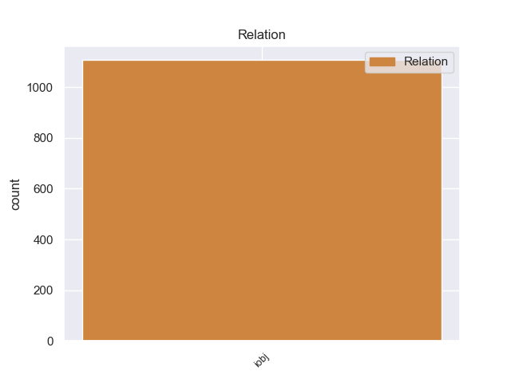
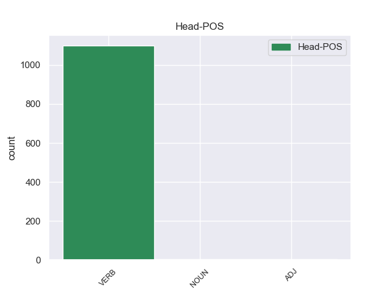
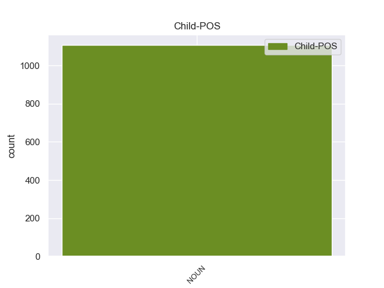

Distribution of features within this leaf



Morphosyntax Rules sorted by frequency.
- When the dependent token is the indirect object(iobj) of the head token, and the dependent token is NOUN, the Case needs to be Acc.
1 अपने _ _ _ _ 0 _ _ _
2 चार _ _ _ _ 0 _ _ _
3 - _ _ _ _ 0 _ _ _
4 दिवसीय _ _ _ _ 0 _ _ _
5 भारत _ _ _ _ 0 _ _ _
6 दौरे _ _ _ _ 0 _ _ _
7 के _ _ _ _ 0 _ _ _
8 दौरान _ _ _ _ 0 _ _ _
9 वे _ _ _ _ 0 _ _ _
10 भारतीय _ _ _ _ 0 _ _ _
11 नेताओं नेता NOUN NN Case=Acc|Gender=Masc|Number=Plur|Person=3 21 iobj _ ChunkId=NP4|ChunkType=head|Tam=0|Translit=netāoṁ|Vib=0_से
12 से _ _ _ _ 0 _ _ _
13 सीमा _ _ _ _ 0 _ _ _
14 विवाद _ _ _ _ 0 _ _ _
15 और _ _ _ _ 0 _ _ _
16 अन्य _ _ _ _ 0 _ _ _
17 द्विपक्षीय _ _ _ _ 0 _ _ _
18 मसलों _ _ _ _ 0 _ _ _
19 पर _ _ _ _ 0 _ _ _
20 बातचीत _ _ _ _ 0 _ _ _
21 करेंगे कर VERB VM Gender=Masc|Mood=Ind|Number=Sing|Person=3|Polite=Form|Tense=Fut|VerbForm=Fin|Voice=Act 0 _ _ _
22 । _ _ _ _ 0 _ _ _
non-conforming Examples:
1 उसने _ _ _ _ 0 _ _ _
2 अपना _ _ _ _ 0 _ _ _
3 बच्चा _ _ _ _ 0 _ _ _
4 एक _ _ _ _ 0 _ _ _
5 मुस्लिम _ _ _ _ 0 _ _ _
6 दम्पति _ _ _ _ 0 _ _ _
7 के _ _ _ _ 0 _ _ _
8 हाथ हाथ NOUN NN Case=Nom|Gender=Masc|Number=Plur|Person=3 15 iobj _ ChunkId=NP5|ChunkType=head|Tam=0|Translit=hātha|Vib=0
9 १४ _ _ _ _ 0 _ _ _
10 नवम्बर _ _ _ _ 0 _ _ _
11 को _ _ _ _ 0 _ _ _
12 ७०० _ _ _ _ 0 _ _ _
13 रुपए _ _ _ _ 0 _ _ _
14 में _ _ _ _ 0 _ _ _
15 बेच बेच VERB VM Number=Sing|Voice=Act 0 _ _ _
16 दिया _ _ _ _ 0 _ _ _
17 । _ _ _ _ 0 _ _ _
1 गौरतलब _ _ _ _ 0 _ _ _
2 है _ _ _ _ 0 _ _ _
3 कि _ _ _ _ 0 _ _ _
4 सुदम _ _ _ _ 0 _ _ _
5 ने _ _ _ _ 0 _ _ _
6 कथित _ _ _ _ 0 _ _ _
7 रूप _ _ _ _ 0 _ _ _
8 से _ _ _ _ 0 _ _ _
9 एक _ _ _ _ 0 _ _ _
10 हजार _ _ _ _ 0 _ _ _
11 रुपए _ _ _ _ 0 _ _ _
12 में _ _ _ _ 0 _ _ _
13 एक _ _ _ _ 0 _ _ _
14 व्यक्ति _ _ _ _ 0 _ _ _
15 के _ _ _ _ 0 _ _ _
16 हाथ हाथ NOUN NN Case=Nom|Gender=Masc|Number=Plur|Person=3 21 iobj _ ChunkId=NP5|ChunkType=head|Tam=0|Translit=hātha|Vib=0
17 बॉबी _ _ _ _ 0 _ _ _
18 का _ _ _ _ 0 _ _ _
19 सौदा _ _ _ _ 0 _ _ _
20 तय _ _ _ _ 0 _ _ _
21 कर कर VERB VM Gender=Masc|Number=Sing|Voice=Act 0 _ _ _
22 लिया _ _ _ _ 0 _ _ _
23 था _ _ _ _ 0 _ _ _
24 । _ _ _ _ 0 _ _ _
1 नक्सल _ _ _ _ 0 _ _ _
2 विरोधी _ _ _ _ 0 _ _ _
3 अभियान _ _ _ _ 0 _ _ _
4 में _ _ _ _ 0 _ _ _
5 शहीद _ _ _ _ 0 _ _ _
6 हुए _ _ _ _ 0 _ _ _
7 जवानों _ _ _ _ 0 _ _ _
8 के _ _ _ _ 0 _ _ _
9 परिवार परिवार NOUN NN Case=Nom|Gender=Masc|Number=Sing|Person=3 20 iobj _ ChunkId=NP3|ChunkType=head|Tam=0|Translit=parivāra|Vib=0_वाला_को
10 वालों _ _ _ _ 0 _ _ _
11 को _ _ _ _ 0 _ _ _
12 विशेष _ _ _ _ 0 _ _ _
13 बीमा _ _ _ _ 0 _ _ _
14 योजना _ _ _ _ 0 _ _ _
15 के _ _ _ _ 0 _ _ _
16 तहत _ _ _ _ 0 _ _ _
17 १० _ _ _ _ 0 _ _ _
18 लाख _ _ _ _ 0 _ _ _
19 रुपये _ _ _ _ 0 _ _ _
20 दिए दे VERB VM Aspect=Perf|Gender=Masc|Number=Plur|Person=3|VerbForm=Part|Voice=Pass 0 _ _ _
21 जाएंगे _ _ _ _ 0 _ _ _
22 । _ _ _ _ 0 _ _ _
1 हुड्डा _ _ _ _ 0 _ _ _
2 ने _ _ _ _ 0 _ _ _
3 श्रमिकों _ _ _ _ 0 _ _ _
4 पर _ _ _ _ 0 _ _ _
5 दंगा दंगा NOUN NN Case=Nom|Gender=Masc|Number=Sing|Person=3 6 iobj _ ChunkId=NP3|ChunkType=head|Tam=0|Translit=daṁgā|Vib=0
6 भड़काने भडका VERB VM Case=Acc|VerbForm=Inf 0 _ _ _
7 , _ _ _ _ 0 _ _ _
8 जानलेवा _ _ _ _ 0 _ _ _
9 हमला _ _ _ _ 0 _ _ _
10 करने _ _ _ _ 0 _ _ _
11 एवं _ _ _ _ 0 _ _ _
12 सरकारी _ _ _ _ 0 _ _ _
13 संपत्ति _ _ _ _ 0 _ _ _
14 को _ _ _ _ 0 _ _ _
15 नुकसान _ _ _ _ 0 _ _ _
16 पहुंचाने _ _ _ _ 0 _ _ _
17 को _ _ _ _ 0 _ _ _
18 लेकर _ _ _ _ 0 _ _ _
19 किए _ _ _ _ 0 _ _ _
20 गए _ _ _ _ 0 _ _ _
21 मुकदमे _ _ _ _ 0 _ _ _
22 के _ _ _ _ 0 _ _ _
23 बारे _ _ _ _ 0 _ _ _
24 में _ _ _ _ 0 _ _ _
25 पूछे _ _ _ _ 0 _ _ _
26 गए _ _ _ _ 0 _ _ _
27 एक _ _ _ _ 0 _ _ _
28 सवाल _ _ _ _ 0 _ _ _
29 के _ _ _ _ 0 _ _ _
30 जवाब _ _ _ _ 0 _ _ _
31 में _ _ _ _ 0 _ _ _
32 बताया _ _ _ _ 0 _ _ _
33 कि _ _ _ _ 0 _ _ _
34 न्यायिक _ _ _ _ 0 _ _ _
35 जांच _ _ _ _ 0 _ _ _
36 में _ _ _ _ 0 _ _ _
37 जो _ _ _ _ 0 _ _ _
38 दोषी _ _ _ _ 0 _ _ _
39 पाया _ _ _ _ 0 _ _ _
40 जाएगा _ _ _ _ 0 _ _ _
41 उसे _ _ _ _ 0 _ _ _
42 दंडित _ _ _ _ 0 _ _ _
43 किया _ _ _ _ 0 _ _ _
44 जाएगा _ _ _ _ 0 _ _ _
45 । _ _ _ _ 0 _ _ _
1 हुड्डा _ _ _ _ 0 _ _ _
2 ने _ _ _ _ 0 _ _ _
3 श्रमिकों _ _ _ _ 0 _ _ _
4 पर _ _ _ _ 0 _ _ _
5 दंगा _ _ _ _ 0 _ _ _
6 भड़काने _ _ _ _ 0 _ _ _
7 , _ _ _ _ 0 _ _ _
8 जानलेवा _ _ _ _ 0 _ _ _
9 हमला हमला NOUN NN Case=Nom|Gender=Masc|Number=Sing|Person=3 10 iobj _ ChunkId=NP4|ChunkType=head|Tam=0|Translit=hamalā|Vib=0
10 करने कर VERB VM Case=Acc|VerbForm=Inf 0 _ _ _
11 एवं _ _ _ _ 0 _ _ _
12 सरकारी _ _ _ _ 0 _ _ _
13 संपत्ति _ _ _ _ 0 _ _ _
14 को _ _ _ _ 0 _ _ _
15 नुकसान _ _ _ _ 0 _ _ _
16 पहुंचाने _ _ _ _ 0 _ _ _
17 को _ _ _ _ 0 _ _ _
18 लेकर _ _ _ _ 0 _ _ _
19 किए _ _ _ _ 0 _ _ _
20 गए _ _ _ _ 0 _ _ _
21 मुकदमे _ _ _ _ 0 _ _ _
22 के _ _ _ _ 0 _ _ _
23 बारे _ _ _ _ 0 _ _ _
24 में _ _ _ _ 0 _ _ _
25 पूछे _ _ _ _ 0 _ _ _
26 गए _ _ _ _ 0 _ _ _
27 एक _ _ _ _ 0 _ _ _
28 सवाल _ _ _ _ 0 _ _ _
29 के _ _ _ _ 0 _ _ _
30 जवाब _ _ _ _ 0 _ _ _
31 में _ _ _ _ 0 _ _ _
32 बताया _ _ _ _ 0 _ _ _
33 कि _ _ _ _ 0 _ _ _
34 न्यायिक _ _ _ _ 0 _ _ _
35 जांच _ _ _ _ 0 _ _ _
36 में _ _ _ _ 0 _ _ _
37 जो _ _ _ _ 0 _ _ _
38 दोषी _ _ _ _ 0 _ _ _
39 पाया _ _ _ _ 0 _ _ _
40 जाएगा _ _ _ _ 0 _ _ _
41 उसे _ _ _ _ 0 _ _ _
42 दंडित _ _ _ _ 0 _ _ _
43 किया _ _ _ _ 0 _ _ _
44 जाएगा _ _ _ _ 0 _ _ _
45 । _ _ _ _ 0 _ _ _